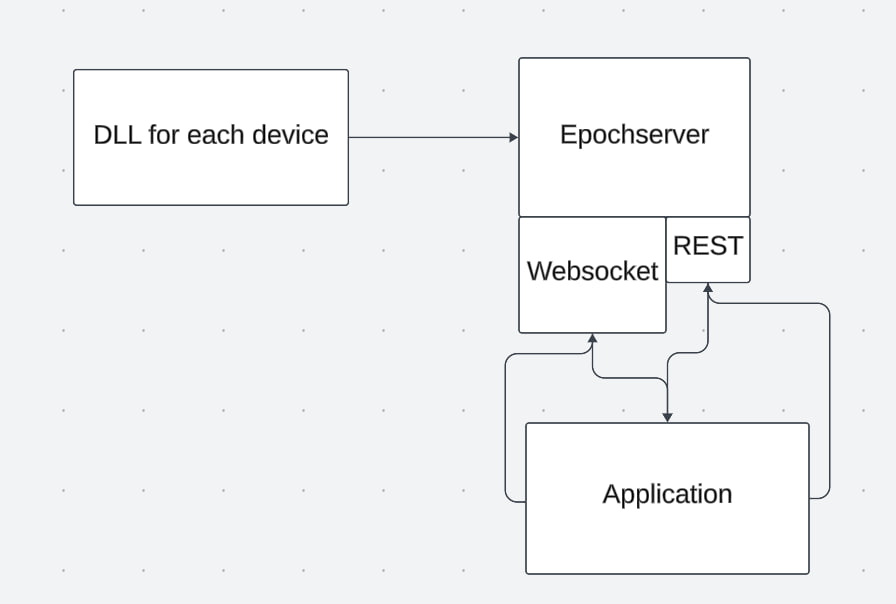

Grundlagen
Im Folgenden werden die Grundlagen zum Verständnis eines Epochsservers genauer erklärt.
Definiton Epoch
Ein Epoch ist zeitliches Bezugssystem. Jedes sich in einem Epoch befindliche Modul bezieht sich auf das gleiche zeitliche Bezugssystem.
Das Konzept ähnelt einem Intitialsystem, mit dem Unterschied das nicht jeder Epoch die gleichen gebenheiten für das zeitliche Bezugsystem liefert.
Epochen bei Hardwaregeräten
Jedes Hardwaregerät das Daten aufnimmt lebt in einem eigenen Epoch, also in einem eigenen zeitlichen Bezugssystem.
Hardwaregeräte die über die selbe Clock gesteuert werden, leben im selben Epoch. Entsprechen leben Hardwaregeräte unterschiedlicher Clocks in unterschiedlichen Epochen.
Wird ein Hardwaregerät an einen Computer angeschlossen ist der Takt der Clock der CPU des Computers unabhängig von dem Clocktakt
der Hardwaregeräte, das bedeutet die CPU befindet sich in einem anderen Epoch als das Hardwaregerät.
Hardwaregeräte die Daten aufnehmen, senden Datenpakete mit einem Zeitstempel. Zeitstempel sind nur im jeweiligen Epoch gültig.
Synchronisation von Datenpaketen mit Zeitstempeln unterschiedlicher Epochs sind momentan nicht möglich.
Um den Zeitstempel der Datenpakete mit denen eines anderen Epochs zu synchronisieren muss eine Transformation durchgeführt werden,
die beide Epochs in ein gemeinsames zeitliches Bezugssystem transformiert.
Problemstellung
Die synchronsierte Aufnahme und Darstellung von Datenpaketen in eine Software und DBMS verschiedener Hardwaregeräte aus unterschiedlichen Epochs ist ein bisher nicht gelöstes Problem.
Unterschiedliche Messgeräte müssen mit der aktuell zur Verfügung stehenden Hardware über unterschiedliche Software gesteuert werden und können nur schwierig miteinander synchronisiert werden.
Ziel des Epochservers ist es dieses Problem zu lösen indem die Epochs verschiedener Messgeräte in ein gemeinsames Bezugssystem transformiert werden.
Epochserver Aufbau
Im folgenden wird der allgemeine Aufbau des Epochservers und seine Nutzung im Kontext einer Anwendung zur synchronsierten
Aufnahme und Anzeige zweier Hardwaregeräte unterschiedlicher Epochs in einer Softwareanwendung beschrieben.
Allgemeiner Aufbau des Epochservers
Schema: Nutzung des Epochsservers im Kontext
Zur Synchronsierung zweier Datenpakete unterschiedlicher Epochs muss der Epochserver in ein System eingebunden werden, dass den Anschluss an ein Hardwaregerät und eine Software ermöglicht.
Hierzu wurde das folgende Konzept entwickelt:
- Verbindung mit dem Hardwaregerät:
Zu jedem Epoch in dem sich ein Hardwaregerät befindet existiert eine .dll oder .so die das UaD Interface erfüllt. Der Epochserver erhält diese .dll oder .so Datei und empfängt dauerhaft Daten des Gerätes über diese.
- Epochserver:
Der Epochserver erhält n .dll die das UaD Interface erfüllen. Für den Epochserver ist damit jedes Hardwaregerät ein Unified Abstract Dataproducer.
Der Epochserver synchronsiert die UaDs und verarbeitet diese.
Der Epochserver selbst läuft im gleichen RAM wie die Software die die Daten anzeigt und verarbeitet. Der Epochserver selbst ist jedoch ein eigener Prozess.
- Bereitstellung der Daten:
Die synchronsierten Daten der Hardwaregeräte werden über einen Websocket bereitgestellt. Die verfügbaren .dll werden von der Software an einer REST-API angefragt und versendet.
- Abgriff der Daten:
Die Daten selbst werden an dem Websocket angefragt und an die jeweilige Applikation gesendet. Die Applikation kann hierbei in einer unabhängigen Programmiersprache geschrieben werden.
